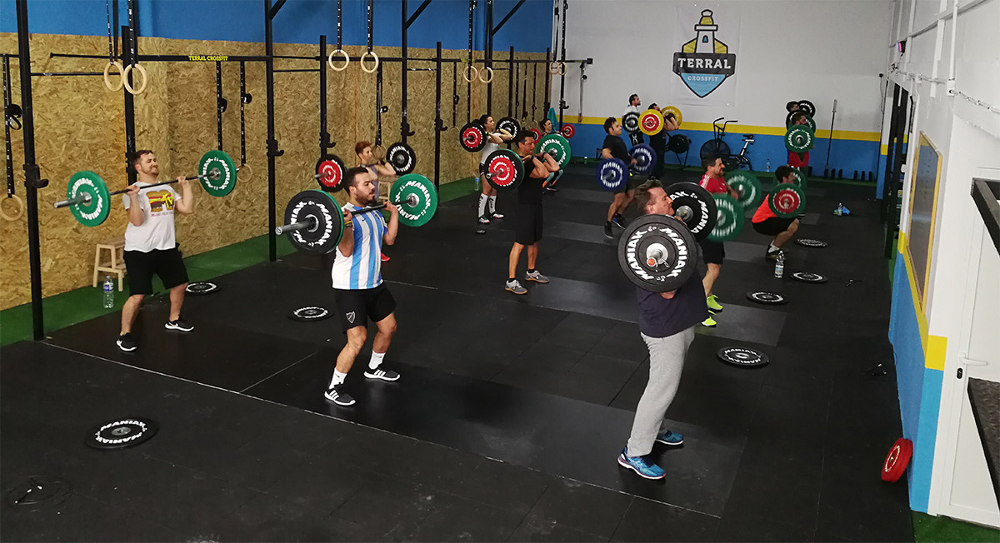
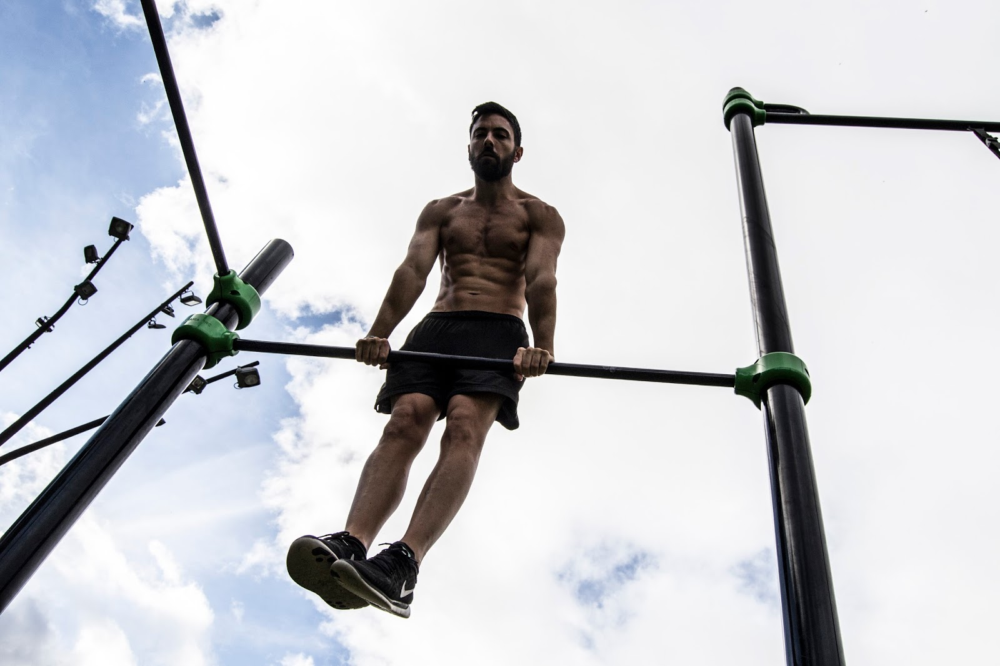
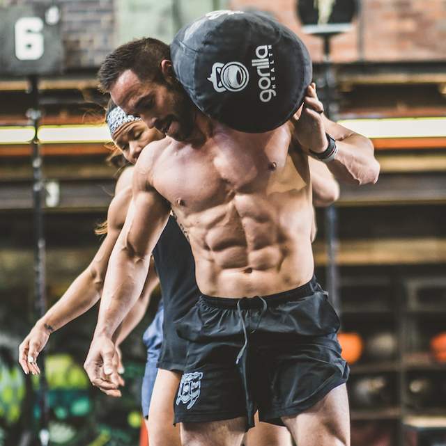
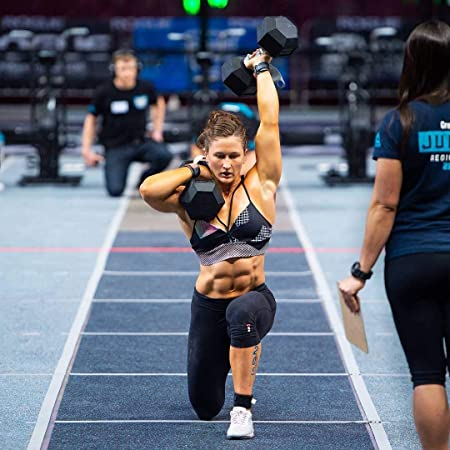

CrossFit
Forging Elite Fitness
CrossFit
CrossFit se define como un sistema de entrenamiento de fuerza
y acondicionamiento basado en ejercicios funcionales constantemente variados realizados a una alta intensidad.
Esto significa que nos valemos de una gran cantidad de ejercicios y disciplinas deportivas (gimnasia, halterofilia, carrera…),
de entre las cuales seleccionamos técnicas o movimientos aplicables a la vida diaria y los combinamos de muchas formas diferentes
en entrenamientos intensos.
Esta noción tiene como principio mantener intacta la motivación de los deportistas a largo plazo.
Se puede realizar de manera individual o en grupo, y las sesiones suelen ser cortas, variadas y adaptables
en función del nivel de cada participante.
El creador del CrossFit, Greg Glassman ha diseñado varios grupos, unos bautizados con nombres de mujeres
en referencia a los huracanes americanos, y otros con nombres
de héroes militares, policías, o bomberos, entre otros, como homenaje.
Existen también otros grupos que no tienen nombre, simplemente la descripción de los ejercicios.
El tiempo de ejecución de cada grupo puede variar, desde solo 5 minutos hasta casi 30 minutos, sin contar el
calentamiento y la vuelta a la calma (estiramiento).
Origen
En 1974, un estudiante universitario de 18 años llamado Greg Glassman, que trabajaba con los atletas en varios gimnasios del sur de California, creó un programa de entrenamiento basado en los movimientos funcionales realizados a alta intensidad, en vez de las rutinas al uso. Greg empezó a usar la técnica para entrenar a policías en California. Posteriormente fue usado para el entrenamiento de marinos, bomberos y militares norteamericanos. En 2021 CrossFit LLC dipone de más de 15 000 boxes (gimnasios) en el mundo.
Gracias a su tremenda efectividad como sistema de preparación física, en sus orígenes el CrossFit fue elegido por numerosas academias militares, cuerpos de policía, artistas marciales y cientos de deportistas de élite en todo el mundo como programa de acondicionamiento y entrenamiento de fuerza estándar. No obstante, a día de hoy, el CrossFit se ha popularizado en todos los sectores de la población. El hecho de ser un programa diseñado para ser fácilmente adaptable lo convierte en el sistema de entrenamiento perfecto para cualquier persona con motivación, independientemente de su edad, sexo, capacidades o experiencia previa.
Beneficios

El CrossFit se ha convertido en uno de los deportes de moda y cada vez gana más adeptos.
Su práctica aporta grandes beneficios para la salud pero se deben seguir unas directrices para
que esos beneficios no se conviertan en inconvenientes.
Agilidad, flexibilidad, velocidad, coordinación, resistencia cardiovascular
y respiratoria, fuerza, equilibrio, potencia, precisión y fortaleza.
Todas estas competencias físicas se desarrollan con la práctica del CrossFit, una modalidad deportiva
en auge bastante completa, no especializada en el trabajo de ninguna zona corporal concreta
¿Cuáles son los beneficios de esta disciplina?
- Pierde peso y elimina grasa.
- Aumento de la fuerza muscular.
- Más resistencia.
- Fomentar la conexión personal con otros practicantes.
Modalidades
El Crossfit es una modalidad de entrenamiento que pretende un estado de “forma física total” desarrollando
todas las cualidades físicas. Los llamados WOD (Workout of the Day o “Entrenamiento del Día“)
consisten en 1, 2 ó 3 grupos de ejercicios dependiendo de las áreas físicas para desarrollar.
Existen distintos tipos de ejercicios que pueden incluirse en el WOD: ejercicios gimnásticos,
de levantamiento de peso, de lanzamiento, precisión, dinámicos, de acondicionamiento metabólico y ejercicios balísticos.
A continuación te presentamos algunos de los WOD más populares:
– AMRAP (As Many Repetitions As Posible)
Consiste en realizar el mayor número de repeticiones de ejercicios posibles en un tiempo determinado.
Por ejemplo en 20 minutos hacer la mayor cantidad de repeticiones de 30 flexiones, 30 sentadillas y subir una
cuerda de 5 metros
– EMOM (Every Minute On a Minute)
Se busca realizar un número de repeticiones de uno o varios ejercicios dentro de 1 minuto
durante los minutos marcados por el entrenador.
– POR TIEMPO
Este tipo de WOD consiste en realizar un número determinado de repeticiones o rondas en un
tiempo límite para cumplir el objetivo.
– TABATA
Se trata de realizar 8 rondas o repeticiones en 20 segundos de ejecución del ejercicio intenso, con 10 minutos
de descanso. También puede ser un TABATA de dos o tres ejercicios diferentes.
Ejercios Más Comunes
Sentadillas
Las sentadillas son un ejercicio habitual en gimnasio, pero también en
entrenamientos de CrossFit.
Son un habitual tanto en la parte previa al WOD en dónde se entrena
la fuerza como en el propio circuito y la podemos encontrar en cualquiera de sus variantes.
Burpees
Los burpees son un habitual en los WODs de CrossFit y son quizás el ejercicio más odiado por usuarios y amado por entrenadores. Es un ejercicio complejo, que trabaja muchos grupos musculares y además requiere de mucho esfuerzo aeróbico.
Muscle Ups
El muscle up tanto en barra o en anillas es un ejercicio que supone elevar tu cuerpo
por encima de la barra después de hacer una dominada. Comenzamos con los brazos sujetados a una barra y una
apertura similar a la que tenemos cuando hacemos una dominada.
En esta posición hacemos un jalón con toda la fuerza que podamos intentando elevar nuestro cuerpo
lo más arriba posible e incluso superando la barra con el pecho. A medida que subimos debemos cambiar la
posición de los brazos sujetando la barra por arriba y haciendo una extensión de tríceps para terminar con los
brazos estirados sobre la barra.
Atletas Más Reconocidos
Rich Froning
Si este deporte tuviera un representante sería él. Y es que es uno de los
atletas hombres de CrossFit más conocidos
Sé que a día de hoy no es el mejor, es más, si eres novato solo le conocerás por participar por equipos, pero en
individual lo que ha hecho este hombre fue épico.
Los números han cambiado mucho, y lo que Froning hacía ahora lo hacen muchos, pero su
tenacidad y trabajo continuo marcaron años en este deporte.

Mat Fraser
El nuevo rey. Se ha ganado el puesto con sus actuaciones año tras año, sin duda. Todos querríamos verle en su estado actual competir contra Froning, pero parece ser que eso ya no va a ocurrir. La última vez que los vimos mano a mano fue en los Games de 2014. Pero para que nos hagamos una idea del tiempo que hace Khalipa y Bridges estaban también en lo más alto de la tabla. Y eso hoy en día ya es poco probable. Aún le queda mucho que dar.
Tia Toomey
Tia-Clair Toomey es una atleta profesional de CrossFit, halterófila y bobsleigher australiana, campeona cinco veces consecutivas de los CrossFit Games en 2017, 2018, 2019 y 2020 Nobull CrossFit Games 2021 Aquí ni siquiera la historia puede variar la tabla. Ella es la líder, sus capacidades halterófilas están fuera de toda cuestión, pero todas las demás habilidades también las maneja como pocos atletas, tanto masculinos como femeninos.
Escríbenos para ponernos en contacto contigo
Alan Cañizalez